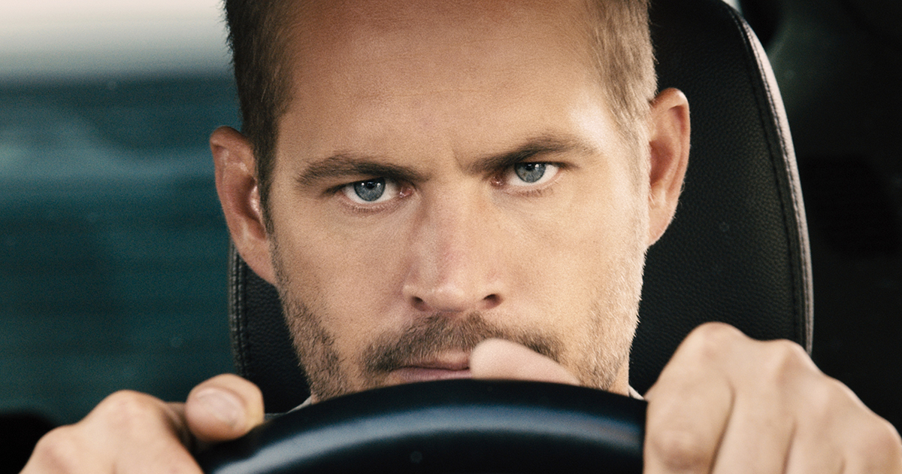

Tribute to Paul Walker
Man whose legacy began behind the wheels

Few things about Paul
Paul William Walker IV[3] (September 12, 1973[4] – November 30, 2013) was an American actor best known for his role as Brian O'Conner in The Fast and Furious franchise
Paul was car enthusiast and he loved cars more than life I guess